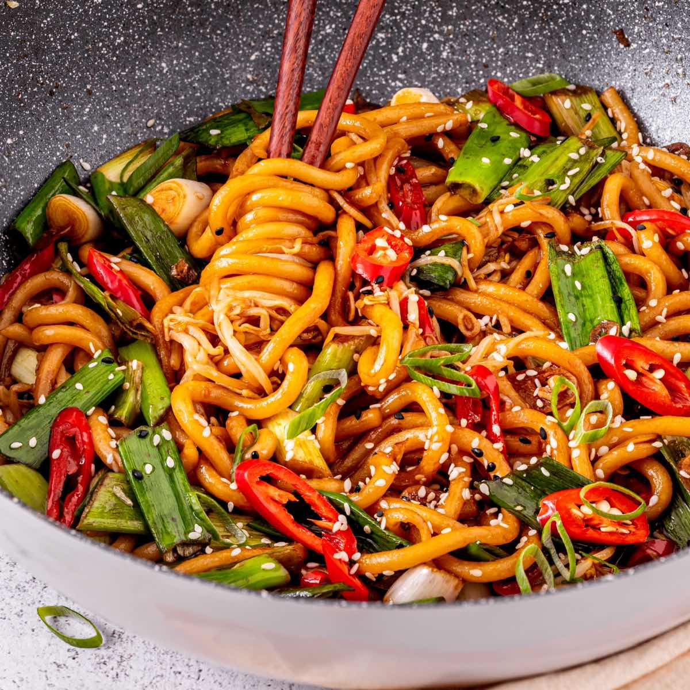
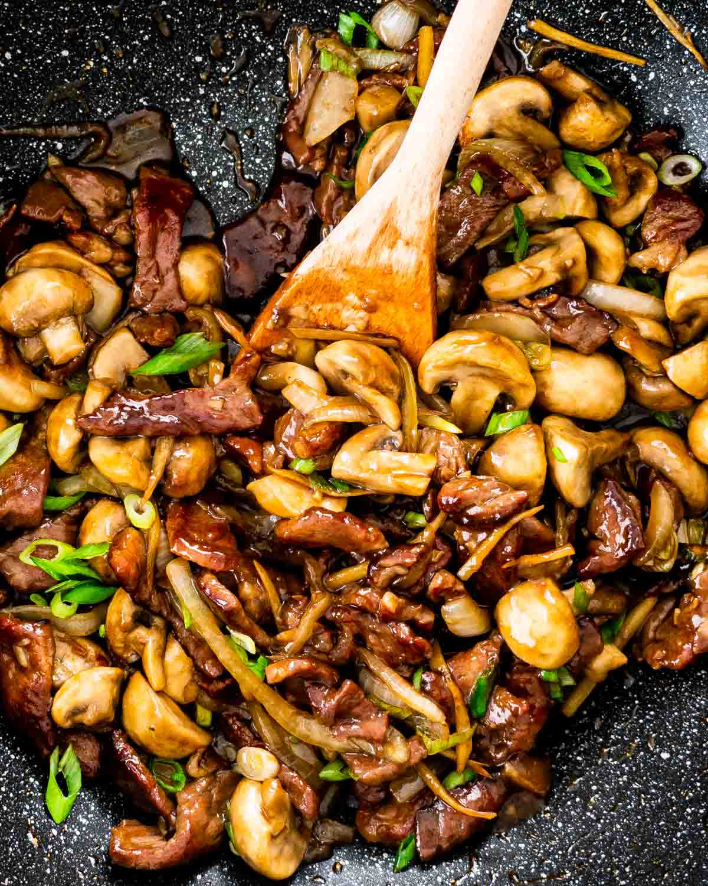

Lunch or Dinner Recipes
Most people skip this meal, so I hope these recipes change your mind.
Veg fried Rice
Ingredients:
- 2 cups cooked rice (preferably day-old rice for best results)
- 2 tablespoons oil (vegetable oil or sesame oil)
- 1/2 cup onion, finely chopped
- 1/2 cup carrots, diced
- 1/2 cup bell peppers, diced
- 1/2 cup green beans, chopped
- 1/4 cup green peas (fresh or frozen)
- 2-3 garlic cloves, minced
- 1 tablespoon soy sauce
- 1 teaspoon vinegar (optional, for tanginess)/li>
- 1/2 teaspoon black pepper (or to taste)
- Salt to taste
- Spring onions, chopped (for garnish)
Recipe:
- Use cooled, day-old rice for the best texture. If using freshly cooked rice, spread it out on a plate and let it cool to prevent clumping.
- Heat oil in a large wok or pan over medium-high heat.
- Add minced garlic and onions to the hot oil. Sauté for 1-2 minutes until fragrant and lightly golden.
- Add carrots, bell peppers, green beans, and green peas. Stir-fry for 3-5 minutes until the vegetables are tender but still crisp.
- Stir in soy sauce, vinegar (if using), black pepper, and a pinch of salt. Mix well to coat the vegetables.
- Add the cooked rice to the pan. Gently toss everything together to combine, ensuring the rice is evenly coated with the sauce and mixed with the vegetables.
- Sprinkle chopped spring onions over the top and serve hot!
Chili Garlic Noodles

Ingredients:
- Any cooked noodle will work
- 1/3 cup vegetable oil
- 3 TBSP chili flakes
- 4 cloves of grated garlic
- ½ tsp sugar
- 2 green onions
- ½ tbsp soy sauce
- 1 tbsp white distilled vinegar
Recipe:
- 1. Boil water in a medium-sized pot, while the water boils add vegetable oil to a small sauce pan over medium high heat.
- Combine all ingredients except oil into a metal bowl.
- Once the oil gets hot pour it into that bowl and mix.
- Cool for 5 minutes.
- While the oil cools cook your noodles. Once the noodles are done strain them, place them into chili oil, and mix.
- Top with green onions, then enjoy.
Mushroom Stir Fry

Ingredients:
- One bowl of mushrooms
- Vegetable oil
- Cornstarch
- ½ yellow onion
- One jalapeno
- 1 tbsp sugar
- 2 tbsp soy sauce
- 1 tbsp white distilled vinegar
- 4 cloves grated garlic
Recipe:
- 1. Thinly slice the mushrooms and heat a saucepan over high heat. While the pan heats toss the pork in cornstarch.
- Once the pan is hot add vegetable oil to the pan, then mushrooms.
- Add sliced onions and jalapenos to the pan, toss together, and cook for an additional 2 minutes.
- Once the vegetables soften add soy sauce and vinegar to the pan and toss.
- Turn off heat and add garlic to the pan until you can smell the garlic.
- Plate with green onion and sliced jalapeno, and enjoy.